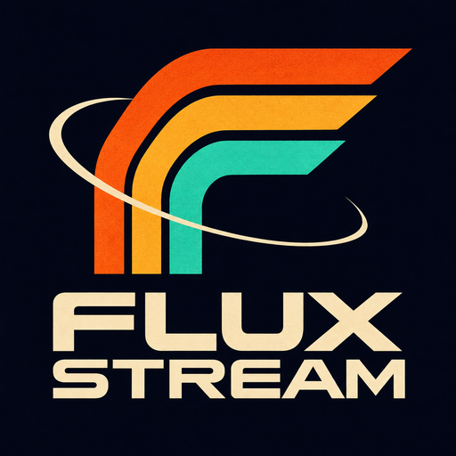
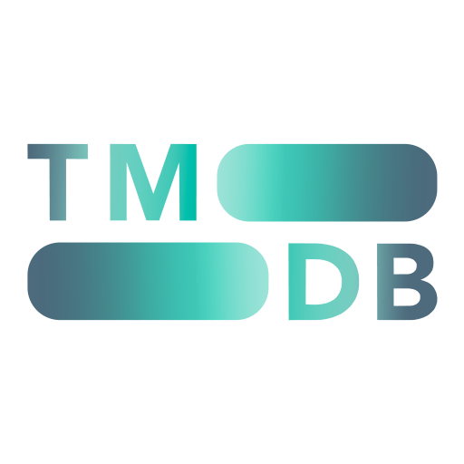

A personal, noncommercial Kodi add-on for a family group of approximately four people, based on Jacktook by Sam-Max.
TMDB supplies movie and TV metadata and artwork. The separately installed CocoScrapers module discovers playback sources, and TorBox checks cached availability and provides playback links. Each person connects their own TorBox and Trakt accounts. The add-on runs on the user's Kodi device without a Flux Stream account or central application backend.
Trakt device-code authorization lets users connect through a QR code and short activation code. Flux Stream reads watchlists, lists, watched status, and playback progress, and can write watched history, list changes, and playback scrobbles according to the features the user chooses. Background synchronization refreshes enabled Trakt features. Trakt is the supported external service for watch-history/progress synchronization; TorBox handles playback and TMDB supplies metadata.
Flux Stream uses Trakt but is not endorsed or certified by Trakt.
Production access is being requested. Until Trakt grants it and the production Client ID is included in an update, the existing Development app remains limited to its owner and invited testers. No production approval is claimed.

This product uses the TMDB API but is not endorsed or certified by TMDB.
The complete packaged Python application source and inherited license are included in each add-on ZIP in the public distribution repository. Development history is maintained separately in a private repository. Original Jacktook notices and license are retained.